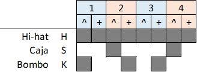
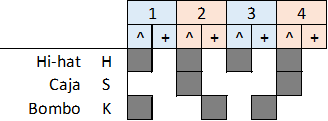
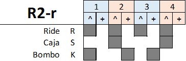

Estrofa: (R1: 8) Estrofa: (R2: 8) Estribillo: (R2-r: 8) Estrofa: (R1: 8) Puente: (K: 8+8) Estribillo: (R2-r: 8) Estrofa: (R2: 8) Final: (R2-r: 8)
(R1: 8) A dónde vas, melón de agua. Buscas refugio en la manada. Que nadie vea tu intención de propinar esa patada. (R2: 8) Melón de agua, melón de hiel, melón de barro, melón de piel. Piel de amarguras, de calabazas, de más mentiras y amenazas. (R2-r: 8) Ven a bregar, ven a bregar, ven a bregar, melón de agua. No esperes siempre en la parada por una línea que no vendrá. (R1: 8) Con falsa solidaridad, con tanto odio y mezquindad. Una memoria de intolerancia, falsa lucha por la igualdad. (K: 8+8) Dónde vas, dime dónde vas, sin Radio Futura por la puerta de atrás. Una insegura realidad que nos atraviesa sin avisar. Había una vez un barquito chiquitito que no podía navegar. Pasaron un, dos, tres y varias semanas y en la manada naufragó. (R2-r: 8) Ven a bregar, ven a bregar, ven a bregar, melón de agua. No esperes siempre en la parada por una línea que no vendrá. (R2: 8) Una injusticia camuflada de mayoría inquisitorial. No hay calor ni hay empatía, ni saben nada de humanidad. (R2-r: 8) Tan sólo quiero habitar en alguien que me sepa amar. Tan sólo quiero habitar en alguien que me sepa amar.